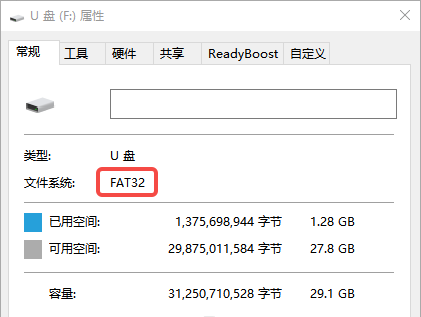
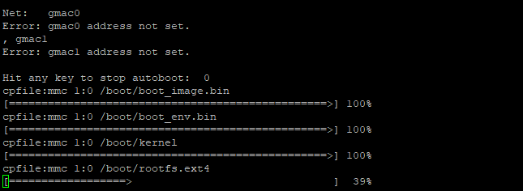
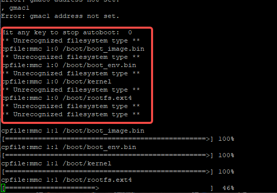
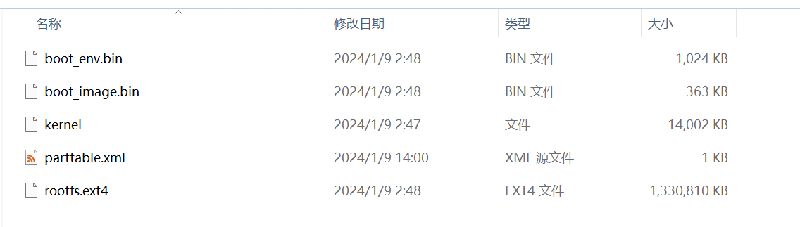
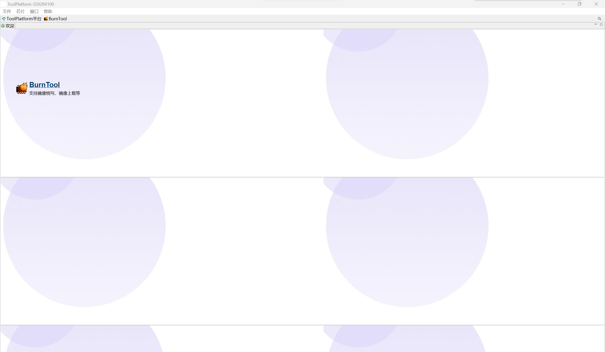
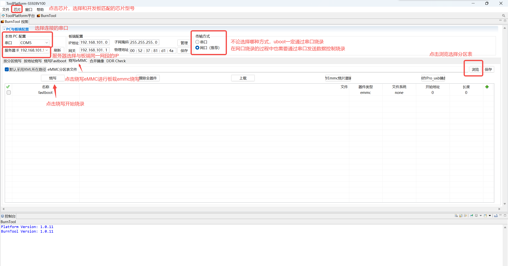
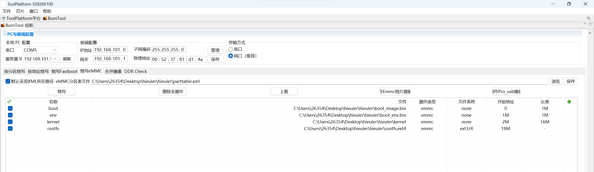
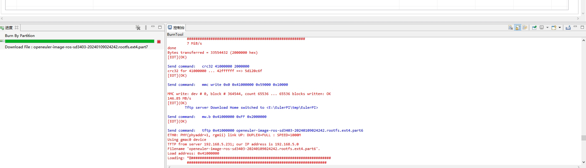
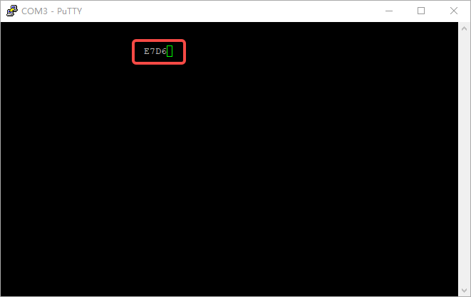

海鸥派镜像在线升级与启动
一、简介
欧拉派-海鸥 系列支持以下升级方式：
主机工具在线升级（推荐，SD 卡暂存）
手动 SD 卡升级（旧版/无网络）
ToolPlatform 工具（裸板或 bootloader 损坏时使用）
以上方式都会把镜像写入板载 eMMC，系统默认从 eMMC 启动。此外还支持 SD 卡启动，需要额外配置启动参数，具体操作参考 五、SD卡启动 的部分。
二、主机工具在线升级（推荐）
适用于板卡已正常启动、网络可达、SD 卡已插入的场景。主机工具位于
bsp/meta-hisilicon/tools/hieulerpi1-upgrade.sh，直接把
kernel-pi 和 rootfs.ext4 写入板卡 SD 卡，设置
update=yes 后重启；U-Boot 在下次启动时把镜像刷入 eMMC。
1) 准备
同一次构建输出的
kernel-pi和rootfs.ext4。已插入 SD 卡（默认
/dev/mmcblk1p1），文件系统可挂载，剩余空间 大于根文件系统大小（约 600MB）。板卡 IP、SSH 可达；工具默认使用仓库内的测试私钥，也可用
--password指定密码。使用密码认证时，主机需要安装
sshpass。
2) 执行
./bsp/meta-hisilicon/tools/hieulerpi1-upgrade.sh \
--ip 192.168.7.3 \
--kernel <build>/kernel-pi \
--rootfs <build>/openeuler-image-hieulerpi1-<时间戳>.rootfs.ext4
常用参数：
--no-reboot：只写 SD 卡并设置升级标志，不重启。--sd-dev/--sd-mount：指定 SD 分区/挂载点。--key/--password：SSH 认证。-y：跳过确认。--wait N：重启后等待板卡恢复（要求 IP 不变）。
工具执行流程：
SSH 登录板卡，挂载 SD 卡到
/mnt/sd。直接 scp
kernel-pi和rootfs.ext4到 SD 卡/mnt/sd/boot，并安装一次性env_append.txt。校验远端文件大小，卸载 SD 卡。
执行
fw_setenv update yes，然后重启板卡。
Note
本板 Linux 对大文件的文件系统读写存在不稳定性，工具跳过远程 md5 校验（仅校验大小），最终以 U-Boot 实际刷写并启动新系统作为验证。
3) U-Boot 刷写流程
U-Boot 启动时 preboot 读取 SD 卡的 /boot/env_append.txt；当
update=yes 时执行 updatecmd：
boot_image_8G.bin→ p1boot_env_8G.bin→ p2kernel→ p3（2MiB）rootfs.ext4→ p4（18MiB）
在线升级通常只放 kernel 和 rootfs.ext4，没有
boot_image_8G.bin/boot_env_8G.bin 时对应步骤跳过，bootloader
和 U-Boot 环境保持原样（环境由 saveenv 更新）。刷写完成后执行：
setenv update no
saveenv
run bootcmd
新系统启动后，hieulerpi1-clear-update.service 会兜底清除残留的
update=yes，避免重复刷写。
4) 验证
fw_printenv update # 应为 no
uname -r # 新内核版本
systemctl is-active hieulerpi1-clear-update.service
resize2fs /dev/mmcblk0p4 # 首次启动后可扩展到整个 p4
镜像默认 IP 为 192.168.7.2``（本板测试环境使用 ``192.168.7.3）。
MAC 由 hieulerpi1-set-mac.service 从 eMMC CID 派生，重启后保持
不变。
Note
--wait 使用执行命令时的 IP；如果新镜像的 IP 发生变化，等待会
失败，需要先通过串口或本地控制台确认新 IP。
三、手动 SD 卡升级（旧版/无网络）
若不清楚这文件系统和系统分区可以忽略下面一小段备注，继续后面的操作。
【备注】 ：SD卡升级功能支持fat32格式和ext4格式的文件系统，在升级时会逐个扫描SD卡的每个分区，直到找到升级文件。
1) 检查文件系统格式
在windows中插入SD卡，查看SD卡的文件系统格式，若为FAT32则无需操作，若不是则需要格式化。

2) 拷贝固件
若要进行SD卡升级，需要将Boot Loader、kernel和文件系统拷贝到SD卡中，并按以下文件名命名， 放在SD卡根目录的boot目录下。
.
└── boot
├── boot_image_8G.bin # U-Boot 引导镜像
├── boot_env_8G.bin # U-Boot 环境
├── kernel # 内核（kernel-pi）
├── rootfs.ext4 # 根文件系统
└── env_append.txt # 一次性升级脚本
由于FAT32文件系统单文件最大仅支持4G的大小，在升级时除正常的单文件升级外还支持分块文件的升级。分块名为原始文件后追加分区编号，编号从0开始，编号不允许带无意义的0，例如rootfs.ext401.
.
└── boot
├── boot_env.bin # uboot
├── boot_env_8G.bin # U-Boot 环境
├── kernel # 内核（kernel-pi）
├── rootfs.ext40 # 根文件系统
├── rootfs.ext41
├── rootfs.ext42
├── rootfs.ext43
├── rootfs.ext44
├── rootfs.ext45
└── env_append.txt # 一次性升级脚本
3) 升级固件
按住update按键，点按reset按键，在reset按键松开之后1~2s即可松开update按键。如果能连接串口可以看到以下输出则表示正在升级。

出现以下问题属于正常现象，在分区中未找到升级固件，只要最终出现升级进度条即可。

Note
使用SD卡更新固件时，可以不需要将所有二进制文件放在SD卡中，只需放入需要更新的二进制即可。 但是，不论更新任何二进制，都需要将env_append.txt文件放入SD卡中，否则无法更新。 比如，我只希望更新内核，那么只需要将kernel文件放入SD卡中， 同时将env_append.txt文件放入SD卡中。之后更新的步骤同上， 但是更新的进度条只会显示内核的更新进度。
env_append.txt 中的 boot_image/boot_env 会自动追加
_${total_mem_size}.bin 后缀，8GB 板对应
boot_image_8G.bin/boot_env_8G.bin。
四、ToolPlatform工具
ToolPlatform工具是烧录芯片镜像的最基本工具，未烧录任何芯片的裸板，或者uboot启动损坏都可以使用该工具重新烧录镜像。若正常使用SD卡升级则无需进行本章的操作。
使用ToolPlatform工具烧录时除了四个固件文件，还需要一个分区表，分区表描述了烧录文件的位置，烧录分区的大小等信息。

初次打开软件可能进入以下页面。

点击图中最醒目的BurnTool即可进入正常烧录的界面。

选择分区表后显示以下界面，点击烧写按键开始烧写，烧写开始时须复位开发板。

下方的控制台在烧录过程中会打印大量日志，在烧录过程中若出现错误可提供更多的错误信息以检查问题。

五、SD卡启动
1) 创建启动SD卡
从SD卡启动需在SD卡中创建对应boot文件分区表及rootfs系统分区表，可以通过修改sd_rootfs_num环境变量指定正确的分区。
【注】：
若正常进行分区sd卡的第一分区，分区号为1，后续分区以此类推。
默认从2号分区启动。
# 使用 fdisk 创建两个分区表，具体设备节点根据实际情况修改，此处需创建好对应1和2分区
sudo fdisk /dev/sdb
# 将分区号为1的分区格式化为 FAT32 格式，用于存储boot相关文件
sudo mkfs.vfat -F 32 /dev/sdb1
# 将该FAT32分区表挂载
sudo mount /dev/sdb1 /mnt/xxx
# 并在挂载后的路径内创建boot文件夹后拷入boot/kernel/rootfs等文件
# 注意此处boot文件夹内不要放入env_append.txt文件
.
└── boot
├── boot_image_8G.bin # U-Boot 引导镜像
├── boot_env_8G.bin # U-Boot 环境
├── kernel # 内核（kernel-pi）
└── rootfs.ext4 # 根文件系统
# 将分区号为2的分区格式化为 ext4，用于写入rootfs
sudo mkfs.ext4 /dev/sdb2
# 将rootfs镜像写入2号分区
sudo dd if=rootfs.ext4 of=/dev/sdb2
2) 从SD卡启动
若要从SD卡启动则需要在uboot内修改启动参数boot_media，在uboot的串口终端中输入print boot_media命令可查看当前的启动方式，boot_media为emmc时从板载的emmc启动，boot_media为sd时从SD卡启动。
# print boot_media
boot_media=emmc
设置从SD卡启动
# 设置从SD卡启动
setenv boot_media sd
# 设置从EMMC启动
setenv boot_media emmc
【注】：
SD卡启动必须为ext4格式的文件系统
默认从SD卡的第二分区启动，若要修改启动分区可修改环境变量
sd_rootfs_num完成对应操作后需要使用
saveenv保存环境变量
六、常见问题
系统无法启动
验证环境变量和分区规划是否匹配
指定的分区位置根文件系统是否损坏
系统无法升级
验证升级分区是否正常
升级文件的路径是否正确
文件系统格式是否正确
【注】：可直接执行
run updatecmd尝试升级查看报错主机工具在线升级失败
确认 SD 卡已插入且可挂载
确认 SSH 密钥/密码正确
使用
--wait时确认新系统 IP 未变化
升级后反复刷写
执行
fw_printenv update，确认结果为no确认
hieulerpi1-clear-update.service为 active可手动执行
fw_setenv update no后重启
无法看到系统打印信息，过一段时间会弹出一段编码
这种情况可能是uboot损坏导致的无法启动，参考 四、ToolPlatform工具 重新烧录uboot和env
